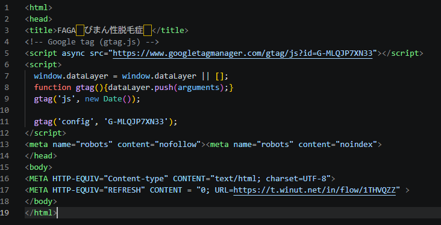

💡 このマニュアルでできるようになること
- LINEチームから渡された素材からメタリフ（中継用HTML）を組み立てる
- 画像・メタリフをFTPでサーバーにアップロードする
- 記事にバナーを埋め込み、公開確認する
業務全体の流れ（依頼フロー）
LINEチームの準備が終わってから、記事にバナーが表示されるまでの一連の流れです。
💡 担当は固定ではない
実質的な制約は④FTPアップロードのみ（サーバーアクセス権の都合で社員限定）。②③⑤は社員・インターンどちらが担当してもよい。
1
LINEチームが準備LINEチーム
設置対象記事・設置位置の指定、バナー画像、WINUT流入リンクの3点を用意する。
▼
2
メタリフHTMLを作る社員インターン
受け取ったWINUT流入リンク・GA4計測IDでメタリフファイルを組み立てる。
▼
3
WP埋め込みコードを下書きする社員インターン
記事に貼る用のコードを、ファイル名を当てはめて下書きする。
▼
4
FTPへアップロード社員のみ
画像・メタリフの両方をサーバーにアップロードする（サーバーアクセス権の都合で社員限定）。
▼
5
WPに埋め込み・公開確認社員インターン
記事にコードを貼り、プレビュー確認後に公開する。
1. まず全体像をつかむ
バナー1本の設置は、3者が順番にバトンを渡してひとつのバナーを完成させる。
担当分け一覧
| 設置対象記事・設置位置の指定 | LINEチーム |
| バナー画像（デザイン素材）の用意 | LINEチーム |
| WINUT流入リンクの発行 | LINEチーム |
| メタリフHTMLの組み立て | 社員 インターン |
| WP埋め込み用コードの下書き作成 | 社員 インターン |
| FTPへの実アップロード | 社員のみ |
| WP埋め込み・公開確認 | 社員 インターン |
| ドメアラサイトの先方依頼 | 社員 |
△ 要確認
インターン→社員の受け渡し方法（Chatwork／共有フォルダ等）はチームの運用に合わせて追記する。
2. 用語集
| メタリフ | 「meta refresh」の略。クリックされるとGA4に計測タグを送りつつ、WINUTの流入リンクへ自動転送する中継用の小さいHTMLファイル |
| WINUT | 診断への流入経路（リンク）を発行するツール。発行はLINEチーム担当 |
| GA4 | Googleアナリティクス4。サイトのアクセス計測ツール。計測IDはサイトごとに固定 |
| FTP | サーバーに直接ファイルをアップロードする方法 |
| WP | WordPress。記事を管理・公開するシステム |
3. メタリフHTMLを作る社員インターン
LINEチームから受け取ったWINUT流入リンク・GA4計測IDを使って、1つのHTMLファイルを組み立てる。
手順
- 下のテンプレートをコピーする。
- {GA4計測ID} を埋める。サイトごとに決まっている固定の値。分からない場合は社員に確認する。
- {LINEチームからもらったWINUT流入リンク} をそのまま貼り付ける。
- ファイル名を {ジャンル}-{記事スラッグ}-shindan-line.html の形式で保存する。
<html>
<head>
<title>{ページタイトル：診断名など任意でOK}</title>
<!-- Google tag (gtag.js) -->
<script async src="https://www.googletagmanager.com/gtag/js?id={GA4計測ID}"></script>
<script>
window.dataLayer = window.dataLayer || [];
function gtag(){dataLayer.push(arguments);}
gtag('js', new Date());
gtag('config', '{GA4計測ID}');
</script>
<meta name="robots" content="nofollow"><meta name="robots" content="noindex">
</head>
<body>
<META HTTP-EQUIV="Content-type" CONTENT="text/html; charset=UTF-8">
<META HTTP-EQUIV="REFRESH" CONTENT = "0; URL={LINEチームからもらったWINUT流入リンク}" >
</body>
</html>
📷
ここに画像を貼る
撮るポイント：テキストエディタで{GA4計測ID}・{WINUT流入リンク}を埋めているところ
保存名：images/banner-01-meta-edit.png
💡 ファイル名の付け方
{ジャンル}-{記事スラッグ}-shindan-line.html例：
faga-biman-shindan-line.html（ジャンル = faga、記事スラッグ = biman）
4. WP埋め込み用コードの下書きを作る社員インターン
記事に貼り付けるコードを下書きする（実際に記事へ貼るのは社員の作業）。
<div class="full_img" style="text-align: center">
<a href="{Step3で作ったメタリフファイルの名前}" target="_blank" rel="nofollow noopener noreferrer">
<img src="{もらった画像ファイルの名前}"
alt="{診断への誘導文言。LINEチームの指定に従う}" />
</a>
</div>⚠ よくあるミス
- GA4計測IDやWINUTリンクの
{ }を消し忘れる - ファイル名の規則（
ジャンル-記事スラッグ-shindan-line.html）を守らない - alt文言をLINEチームの指定と違う内容にしてしまう
5. 社員に引き継ぐインターン → 社員
②③をインターンが担当した場合のみ発生するステップ。社員自身が②③を作った場合は引き継ぎ不要でそのままFTP作業に進む。
以下をまとめて担当社員に共有する。
- バナー画像ファイル
- メタリフHTMLファイル（手順3で作ったもの）
- WP埋め込み用コード（手順4で作ったもの）
- 対象記事のURL・設置位置メモ
△ 要確認
共有する方法（Chatwork／共有フォルダ等）はチームに確認する。
6. FTPへのアップロード社員
FTP認証情報は各自が把握しているものを使用する（本マニュアルには記載しない）。
画像
- FTPクライアント（FileZilla）で対象サイトに接続する。
- /assets/uploads にバナー画像をアップロードする。
メタリフHTML
- 同じFTP接続で /web にメタリフHTMLファイルをアップロードする。

📷
ここに画像を貼る
撮るポイント：FileZillaで/assets/uploadsまたは/webにアップロードしている様子
保存名：images/banner-02-ftp-upload.png
⚠ 注意
- 画像・メタリフのどちらか一方でもFTPに上げ忘れると本番に反映されない。
ドメアラサイト（渋谷・小田など）の場合
自社でFTPを直接操作できないため、先方へChatworkで依頼する。
7. WP埋め込み・公開確認社員インターン
- WP管理画面にログインし、対象記事を開く（投稿一覧 / 固定ページ一覧 から検索）。
- 手順4で用意した下書きコードを、指定された設置位置に貼り付ける。
<div class="full_img" style="text-align: center">
<a href="{メタリフのURL}" target="_blank" rel="nofollow noopener noreferrer">
<img src="{バナー画像のURL}"
alt="{診断への誘導文言}" />
</a>
</div>コード内のURL（href・src）が、手順6でFTPにアップロードした実際のパスと一致しているか確認する。
- プレビューで正常に表示されるか確認する。
- 問題なければ更新（公開）する。
- microCMSを使っているサイトは、更新後に手動同期を実行する。

📷
ここに画像を貼る
撮るポイント：記事プレビューでバナーが正常表示されているところ
保存名：images/banner-03-preview.png
8. まとめ：公開前チェックリスト
| ✓ | 項目 |
|---|---|
| ☐ | 画像・メタリフの両方がFTPに上がっている |
| ☐ | href（メタリフURL）とsrc（画像URL）が実際のアップロード先と一致している |
| ☐ | alt文言が診断内容・LINEチームの指定と合っている |
| ☐ | プレビューで正常表示されている |
困ったら：どの手順・どのファイルで詰まったかをメモして、担当者に共有してください。
スクショの入れ方：このHTMLと同じ階層の images/ フォルダに、各枠に書かれた保存名でPNGを置くと、自動でその場所に表示されます。